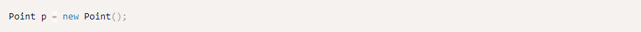
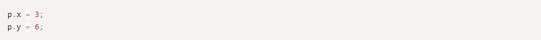

Objects
Everything in Java is within classes and objects. Java objects hold a state, state are variables which are saved
together within an object, we call them fields or member variables.
Let start with an example:
This class defined a point with x and y values.
In order to create an instance of this class, we need to use the keyword new.

In this case, we used a default constructor (constructor that doesn't get arguments) to create a Point. All classes
that don't explicitly define a constructor has a default constructor that does nothing.
We can define our own constructor:
This means we can not longer use the default constructor new Point(). We can now only use the defined constructor
new Point(4, 1).
We can define more than one constructor, so Point can be created in several ways. Let's define the default
constructor again.
Notice the usage of the this keyword here. We can use it within a constructor to call a different constructor (in order to avoid code duplication). It can only be the first line within the constructor.
We also used the this keyword as a reference of the current object we are running on.
After we defined p we can access x and y.

Methods
We can now define methods on Point.
Public and Private
Although we'll talk about modifiers later on, it's important to understand the different between private and public variables and methods. When using the keyword private before a variable or a method, it means only the class itself can access the variable or method, when we're using public it means everybody can access it. We usually see constructors defined as public, variables defined as private and methods are separated, some public and some private.